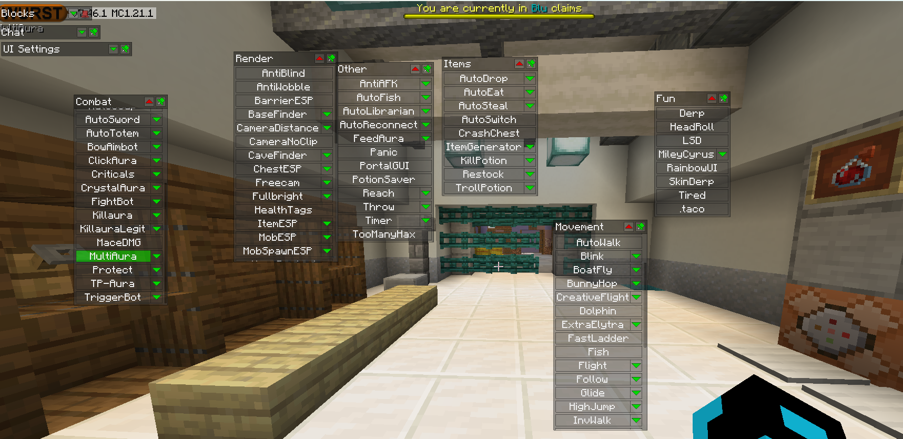
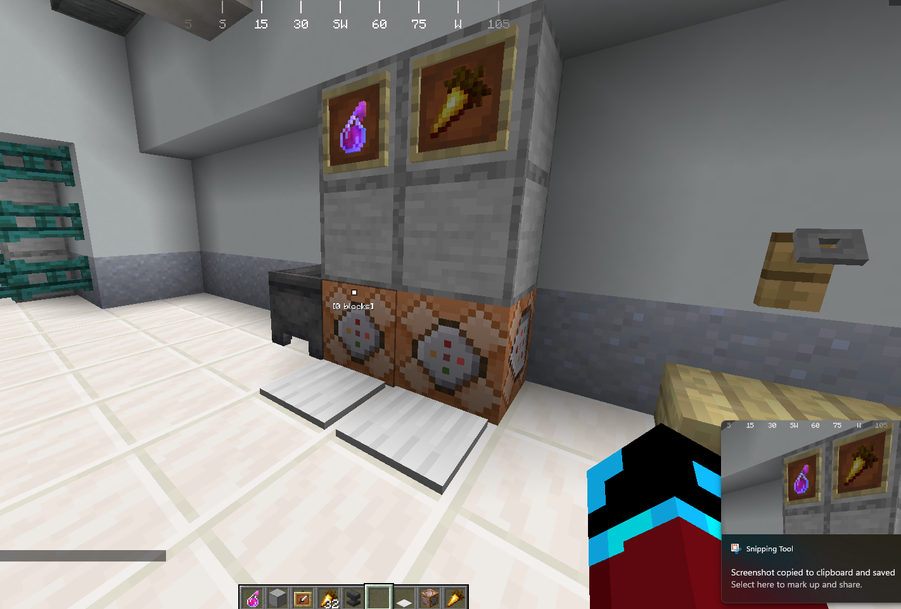

Overview
Stand up a real environment. Ship versions. Measure what changed.
I led a team building and operating a hosted multiplayer server with custom minigames. The project was scoped as a Human–Computer Interaction study, which meant we weren’t just deploying software — we were iterating on user experience across multiple prototype releases and measuring the change with structured user research. It was the closest I’ve come so far to a real infrastructure-plus-product delivery cycle.
Gallery
Build & configuration


What I did
Responsibilities
- Stood up an Ubuntu host from scratch and installed the Pterodactyl management panel for server orchestration, configuration, and operator access.
- Configured networking so players could connect and the team could administer the server remotely, including port configuration and basic access control.
- Integrated gameplay plugins across multiple iterative releases, supporting updates and custom gameplay changes between versions.
- Troubleshot environment and deployment issues as they came up — the kind of “something isn’t behaving, figure out why” work that makes or breaks real systems.
- Designed and ran user surveys to measure the impact of each version’s changes and guide the next round of work.
Recording
Prototype showcase
Crown Prototype Showcase (unlisted YouTube video)
Trouble loading the video? Watch it on YouTube →
Takeaways
Skills exercised
Systems
- Linux setup & service management
- Panel-driven server orchestration
- Troubleshooting under pressure
Networking
- Hosted-service connectivity
- Port configuration
- Basic access control thinking
Team delivery
- Version tracking across iterations
- Coordinated deployments
- Task ownership & sprint planning
User research
- Survey design
- Control-group feedback
- Iterating on measured results